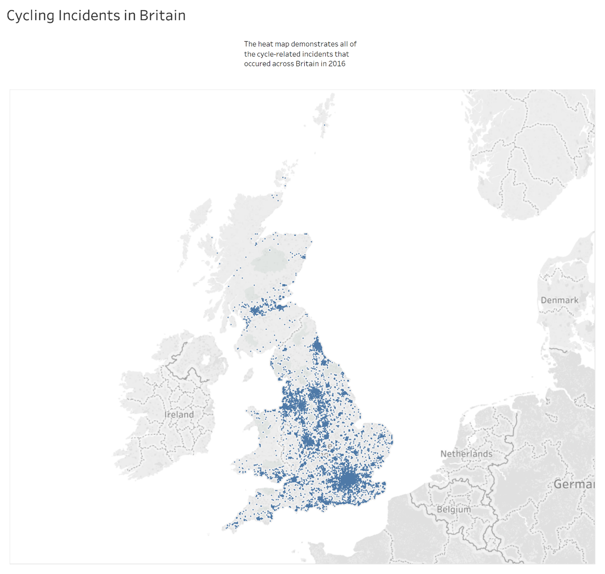

In 2016, cyclists were involved in 18,936 road incidents, 80 percent of which occurred in urban areas, according to government data.
This national pattern is mirrored in individual police forces as well. The Metropolitan police jurisdiction, comprised primarily of urban areas, contributed to 24 percent of UK incidents. Even areas with minor urban areas demonstrate the same issue. Of the 248 incidents in the South Wales area, 110 occurred in Cardiff.

Many of these accidents are a result of vehicle drivers failing to maintain an adequate distance from cyclists. Urban areas tend to produce heavier traffic which only amplifies this issue.
In an effort to reduce these incidents, West Midlands police introduced Operation Close Pass. The objective is to enforce an appropriate distance between vehicles and bicycles. It is executed by out-of-uniform policemen on bicycles who educate offending vehicle drivers.
PC Mark Hodson from West Midlands Police’s Force Traffic Unit says, “we’ve seen reports of close-passes halve in the West Midlands since we started the project”. Hodson also cites a noticeable behavioural change in vehicle drivers.
The positive change in the West Midlands has incited Cycling UK to campaign for all UK police forces to implement Operation Close Pass. The organisation’s senior road safety officer Duncan Dollimore says “It’s a cost effective initiative that has proved highly effective at changing dangerous driving behaviour”.
Police forces are currently debating whether to institute the initiative. Data shows that those responsible for urban areas have a greater responsibility to ensure all vehicle drivers are aware of the issue. Within South Wales, this area is Cardiff and Cardiff North AM Julie Morgan says “anything that can make cycling safer and more attractive is a good thing”. However, South Wales police has already rejected the initiative in favour of existing methods.